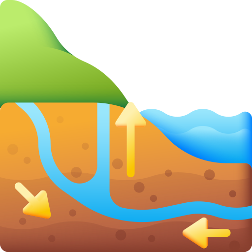
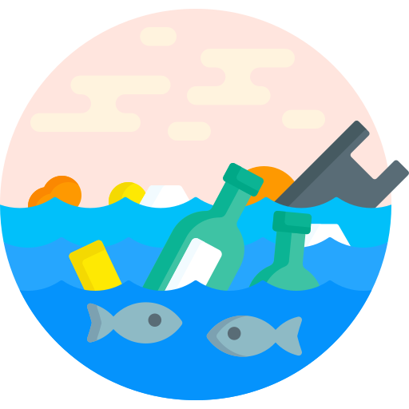

Introduction
What is Groundwater?
Groundwater is a vital water source for ecosystems, agriculture, and daily use.
The Problem
Challenges like over-extraction, pollution, and seasonal changes make managing groundwater difficult.
Why Our Application?
Our tool offers accurate predictions, trend analysis, and interactive maps to help monitor and manage groundwater levels effectively.

How it works
Uses machine learning and historical data to provide insights into groundwater conditions.

Who Can Benefit?
Ideal for farmers, researchers, policymakers, and anyone concerned with water management.

Features
Prediction
Accurate groundwater level predictions using machine learning to help manage water resources.
Learn More
Visualization
Interactive charts to compare groundwater levels across locations and spot trends.
Learn More
Interactive Map
Enter your state and district to zoom in on the map and view detailed groundwater data.
Learn MoreFrequently Asked Questions
What is HydroScope?
HydroScope is a web-based tool that helps users predict and monitor groundwater levels across various regions in India. It uses historical data and machine learning algorithms to provide insights into groundwater conditions.
How does HydroScope predict groundwater levels?
HydroScope leverages machine learning models trained on historical data, climate conditions, and other relevant factors to predict groundwater level trends. The predictions are aimed at providing valuable insights for water resource management.
Who can benefit from using HydroScope?
The tool is designed for a wide range of users including farmers, researchers, environmentalists, policymakers, and anyone concerned with sustainable water management practices.
Can I use HydroScope for my region?
Yes, HydroScope covers various states and districts in India. You can enter your state and district to access groundwater data specific to your area and view predictions and trends.
How accurate are the predictions?
While HydroScope aims to provide accurate predictions based on available data, the results may vary due to the complexities of groundwater behavior and environmental factors. It's recommended to use the predictions as one of several tools for decision-making.
How frequently is the data updated?
The data is updated periodically based on the availability of new information from reliable sources. Users are encouraged to check the application regularly for the latest updates.
Is the service free to use?
Yes, HydroScope offers free access to its basic features. However, premium features and advanced analytics may be available through subscription plans in the future.